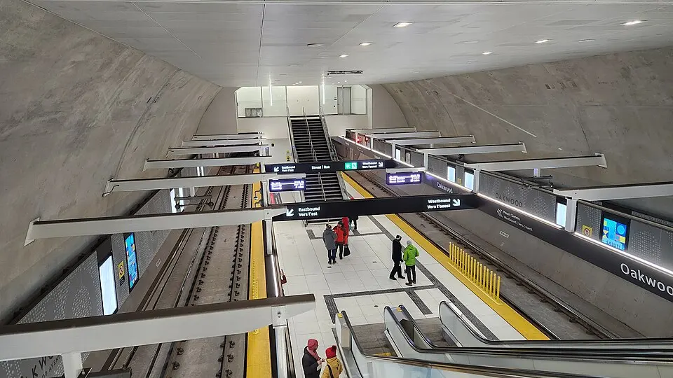

Signal
SignalStation atlas / Oakwood
Station history
Oakwood


Station history
Metrolinx documented the window artwork at the main entrance. Ontario artist Nicholas Pye used colour and intersecting forms in the glass.
The new station at Oakwood Avenue was the westernmost of the Crosstown’s three mined stations. Crews excavated a cavern beneath the roadway.